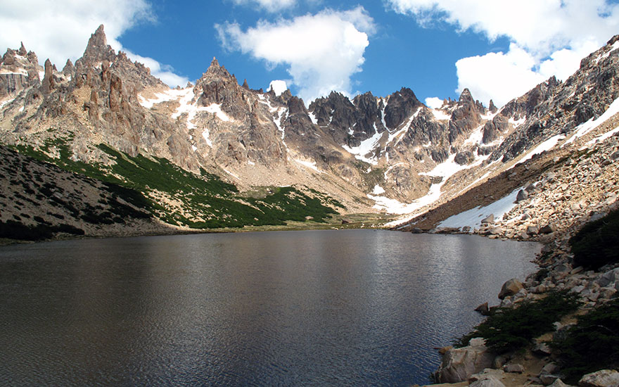
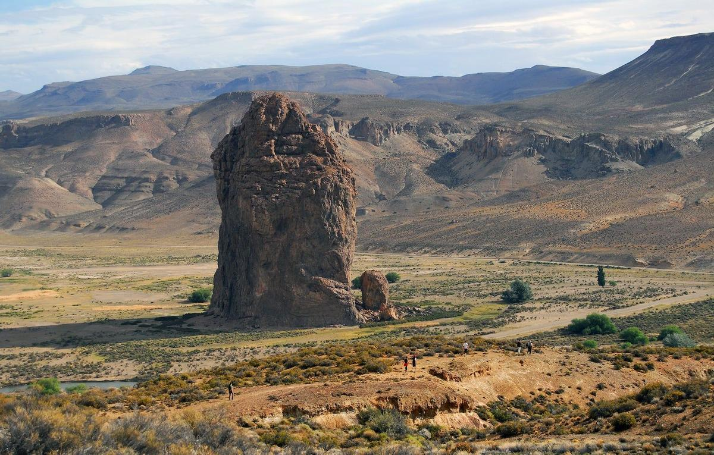
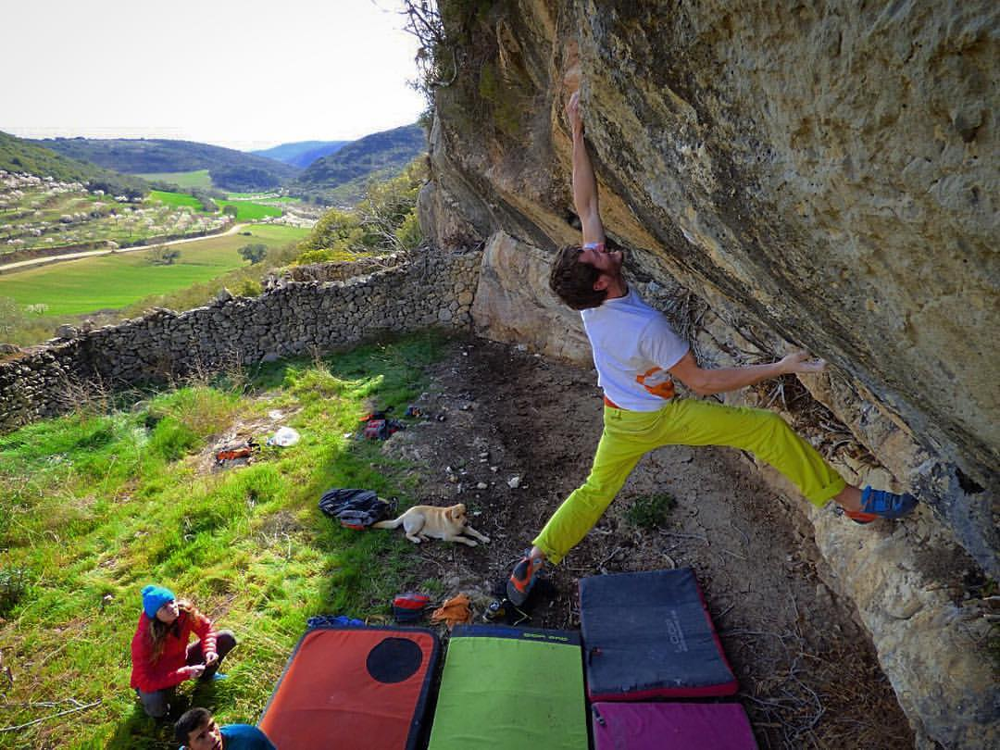
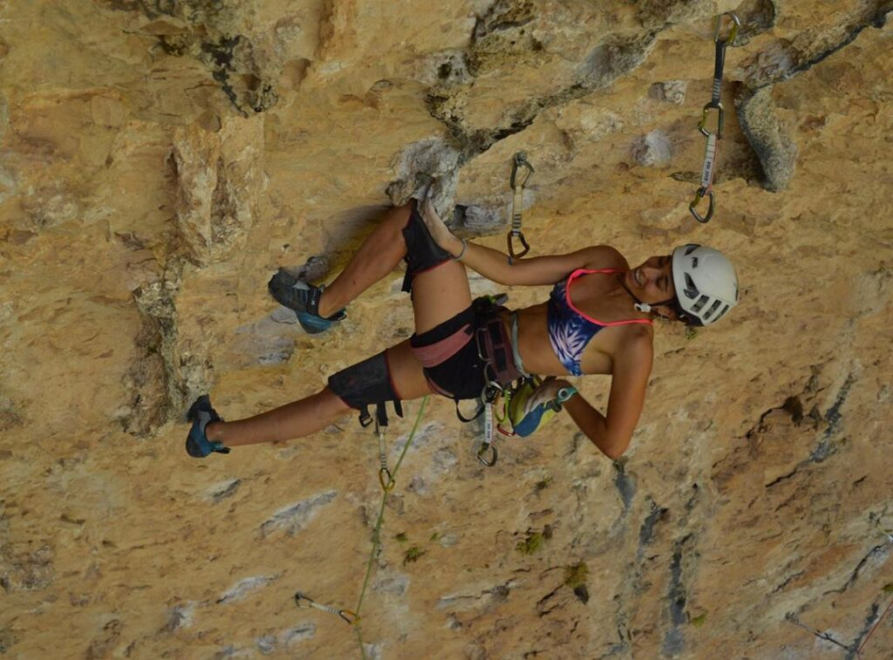
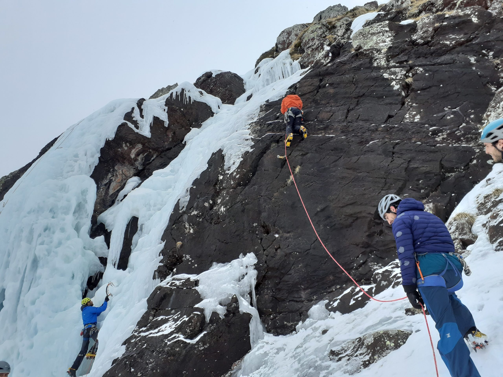

Los viajes de escalada ofrecen una oportunidad única para explorar nuevos terrenos, desafiar tus límites y sumergirte en la belleza natural del mundo que te rodea. Desde la majestuosidad de las montañas hasta la serenidad de los cañones, cada destino ofrece su propia experiencia única. Ya sea escalando en roca, hielo o montañas, cada viaje de escalada es una aventura emocionante que te lleva más allá de tu zona de confort y te conecta con la naturaleza de una manera profunda y significativa. Además de la escalada en sí, estos viajes ofrecen la oportunidad de conocer nuevas culturas, compartir experiencias con otros escaladores apasionados y crear recuerdos que durarán toda la vida.
Aguja Fitz Roy
El Chaltén, Santa Cruz, Argentina

Agujas del Frey
Bariloche, Río Negro, Argentina

Piedra Parada
Chubut, Argentina
¡En un viaje de escalada, tenés la chance de explorar un montón de experiencias, desde la escalada deportiva hasta el boulder, ¡y para todos los niveles de habilidad! Ya sea que estés arrancando tu aventura en la roca o que seas un escalador picante buscando nuevos desafíos, hay algo para todos. Desde escalar paredes altas hasta resolver problemas técnicos en rocas más bajas, cada día te trae una nueva aventura. Los viajes de escalada te dejan meter en la naturaleza y disfrutar de paisajes increíbles mientras te ponés a prueba física y mentalmente. Con la guía de expertos y el compañerismo de otros escaladores apasionados, cada momento se vuelve una experiencia inolvidable llena de aprendizaje y crecimiento personal. Así que preparate para vivir momentos emocionantes, superar tus límites y armar recuerdos que van a durar toda la vida en tu próximo viaje de escalada. ¡La aventura te espera!

Boulder en roca
Modalidad de escalada sin cuerda en paredes bajas

Deportiva en roca
Modalidad de escalada con cuerda en paredes altas

Alpinismo
Modalidad de escalada que consiste en escalar paredes con hielo
Compañeros de escalada
La compañía en un viaje de escalada resulta fundamental. En primer lugar, es indispensable contar con al menos una persona, que será tu compañera de cordada; siempre en una cordada habrá un escalador y un asegurador. Luego, en los viajes de escalada convencionales, es normal que viajes con un grupo de varias personas. Entendemos que no es tan fácil encontrar un grupo afín a vos, más aún para viajar, así que acá te ofrecemos la solución: un formulario para conocerte y ayudarte a encontrar tus compañeros de escalada. ¿Empezamos?